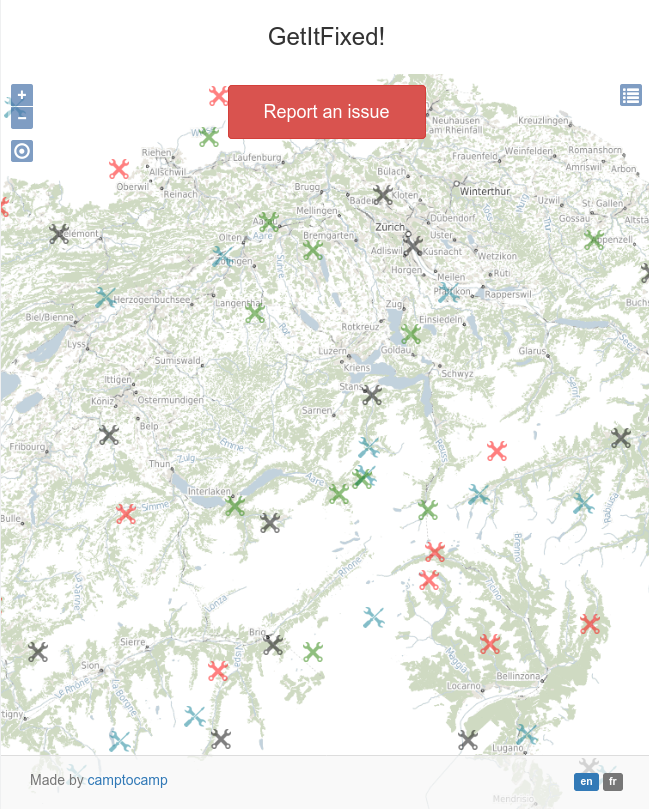
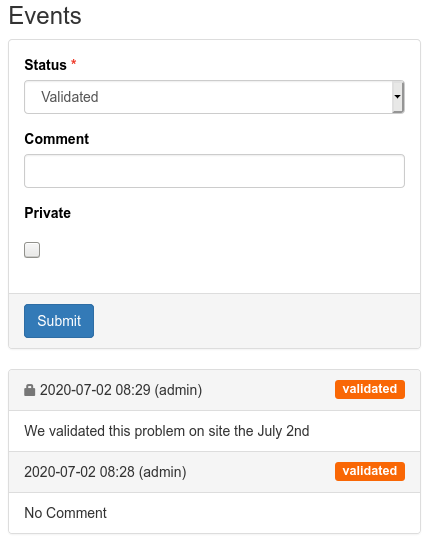

Signalement cartographique
Une carte claire pour visualiser les incidents, guider les usagers et accélérer la remontée des problèmes.
Le module ultime de suivi des problèmes conçu pour une intégration parfaite et transparente avec vos projets GeoMapFish.
Disposez d'une interface publique intuitive pour que vos utilisateurs signalent des problèmes, et d'une interface d'administration puissante pour que vos équipes les gèrent.
Définissez vos propres catégories et types d'anomalies. Associez-y des icônes personnalisées pour une identification visuelle rapide sur la carte.
Restez informé en temps réel. Le système envoie automatiquement des e-mails via votre serveur SMTP lors de la création ou de la mise à jour des tickets.
Montrez immédiatement la valeur de GetItFixed! avec une interface cartographique claire pour le signalement et un suivi métier pensé pour les équipes terrain.

Une carte claire pour visualiser les incidents, guider les usagers et accélérer la remontée des problèmes.

Un tableau de suivi simple pour qualifier, traiter et historiser chaque incident jusqu'à sa résolution.
GetItFixed! a été pensé dès le départ pour fonctionner en harmonie avec GeoMapFish. L'ajout du module se fait en quelques étapes simples :
vars.yamlAlembicgetitfixed_admin aux rôles appropriésclass Root:
__acl__ = [
(Allow, 'role_admin', ALL_PERMISSIONS),
(Allow, 'role_getitfixed', 'getitfixed_admin'),
]Oubliez les installations complexes. GetItFixed s'appuie sur des conteneurs Docker pour un déploiement fiable et reproductible, que ce soit en développement ou en production.
$ git clone git@github.com:camptocamp/getitfixed.git
$ cd getitfixed
$ make meacoffee # Lance le projet avec des données de testConsultez la documentation complète de GetItFixed! en français ou en anglais, selon votre rôle.
Guides en français pour l’installation technique et l’administration web de l’application.
English guides for technical installation and web administration of the application.